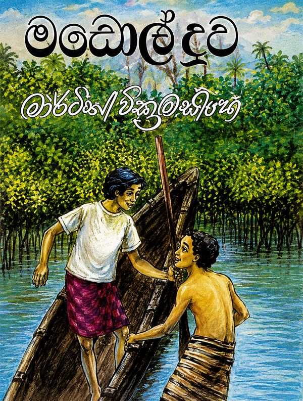
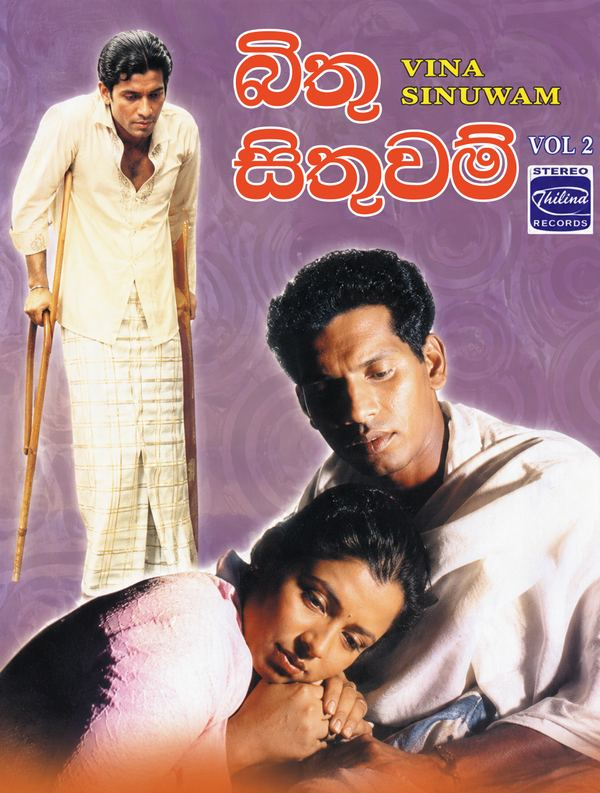
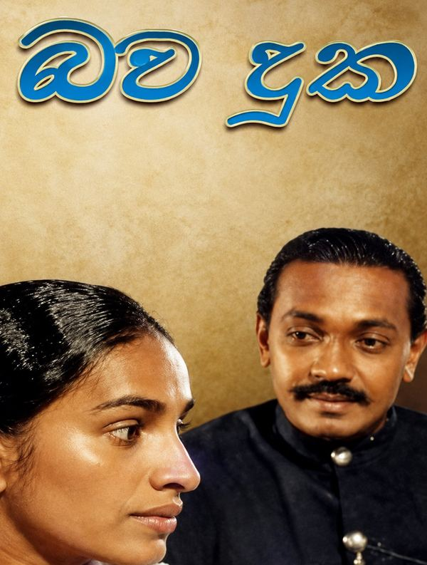
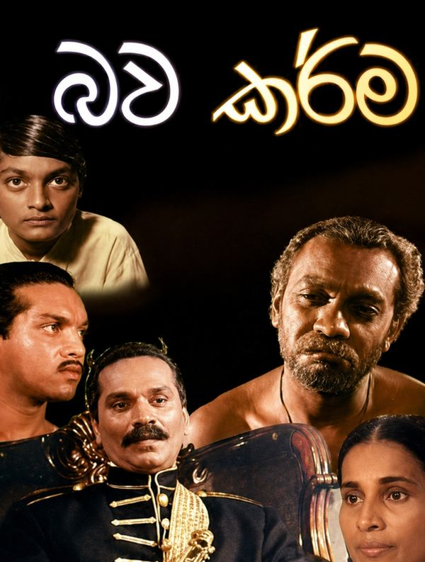
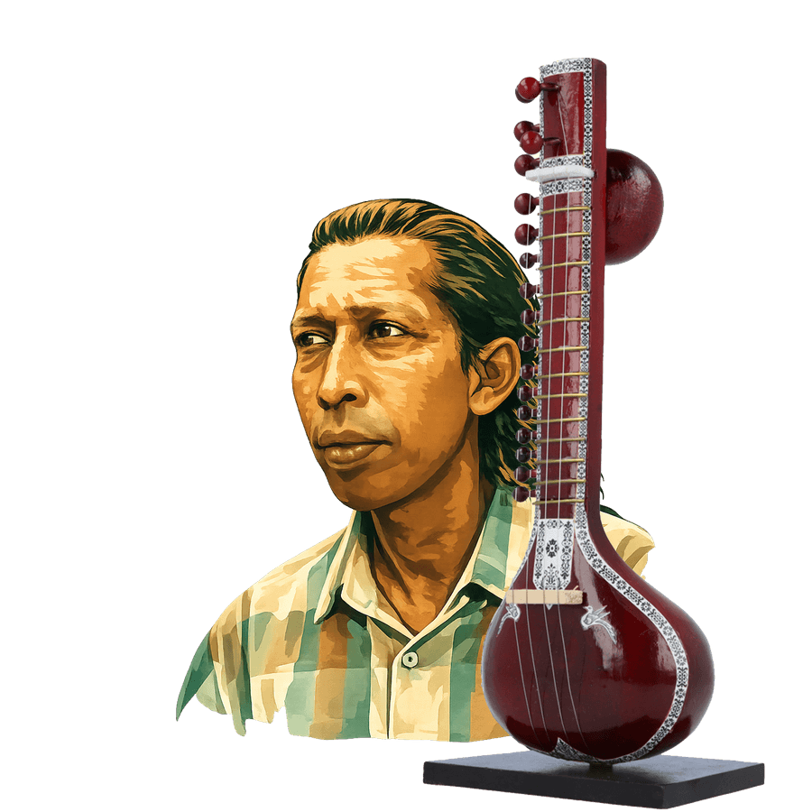

1945 – 2003
Gunadasa Kapuge
ගුණදාස කපුගේ
The Poet of Sri Lankan Song — ගීතයේ දාර්ශනිකයා
A legendary Sri Lankan singer, composer, and music director whose philosophical lyrics and soulful voice defined a generation. සිංහල සංගීතයට දාර්ශනික මානයක් එක් කළ ගායක, ගීත රචක, සංගීත අධ්යක්ෂවරයෙකි.
A Voice with a Philosophy
දර්ශනයක් සහිත හඬක්
Born on August 7, 1945, in Elpitiya, Sri Lanka, Ellamulla Kapuge Gunadasa — known to the world simply as Gunadasa Kapuge — became one of Sri Lanka's most revered musical figures. Across a career spanning three decades, he worked as a singer, composer, music director, and playback artist for film and stage, infusing every performance with a distinct philosophical depth and social conscience.
1945 අගෝස්තු 7 වන දින ශ්රී ලංකාවේ ඇල්පිටියේ දී උපත ලැබූ එල්ලමුල්ල කපුගේ ගුණදාස — ලොවට ගුණදාස කපුගේ ලෙස හඳුන්වන — ශ්රී ලංකාවේ වැඩිම ගෞරවයට පාත්ර වූ සංගීතඥයෙකු බවට පත් විය. දශක තුනක් පුරා විහිදුණු ඔහුගේ වෘත්තීය ජීවිතය තුළ ඔහු ගායකයෙකු, නිර්මාපකයෙකු, සංගීත අධ්යක්ෂවරයෙකු සහ චිත්රපට හා වේදිකා සඳහා හඬ කැවීමේ ශිල්පියෙකු ලෙස කටයුතු කළේ ය. ඔහුගේ සෑම ප්රසංගයකටම ඔහු අනන්ය වූ දාර්ශනික ගැඹුරක් සහ සමාජ සවිඥානකත්වයක් එක් කළේ ය.
He left music college in 1963 to pursue advanced studies in India. Upon returning, he joined the Sri Lanka Broadcasting Corporation, rising to the position of program producer by 1975. His breakthrough came in 1973 with "Daesa Nilupul Thema," which earned him the prestigious "Grade A" vocalist designation from Radio Ceylon.
1963 දී ඔහු සංගීත විද්යාලයෙන් ඉවත් වී ඉන්දියාවේ වැඩිදුර අධ්යාපනය ලැබීමට ගියේය. නැවත පැමිණීමෙන් පසු ඔහු ලංකා ගුවන්විදුලි සංස්ථාවට එක් වූ අතර 1975 වන විට වැඩසටහන් නිෂ්පාදක තනතුර දක්වා උසස් විය. ඔහුගේ සන්ධිස්ථානය වූයේ 1973 දී "දෑස නිල්පුල් තෙම" ගීතයෙනි. එම ගීතය ඔහුව රේඩියෝ ලංකාවේ "A ශ්රේණියේ" ගායක පදවියට හිමිකම් කීමට දායක විය.
In 1990, Kapuge launched his historic one-man show "Kampana" at the Lumbini Theatre, going on to perform nearly 1,000 shows nationwide within just two years — a feat unmatched in Sri Lankan music history. His music drew from Pop, Soul, Rhythm & Blues, and Country influences, blended seamlessly with local sensibilities.
1990 දී, කපුගේ තමන්ගේ ඓතිහාසික ඒක පුද්ගල ප්රසංගය "කම්පන" ලුම්බිණි රඟහලේදී දියත් කළේ ය. ඉන්පසු වසර දෙකක් ඇතුළත රටපුරා ප්රසංග 1,000කට ආසන්න ප්රමාණයක් ඉදිරිපත් කළේ ය. මෙය ශ්රී ලංකා සංගීත ඉතිහාසයේ කිසිවෙකු විසින් නොලද ජයග්රහණයක් විය. ඔහුගේ සංගීතය පොප්, සෝල්, රිදම් ඇන්ඩ් බ්ලූස් සහ කන්ට්රි යන බලපෑම් වලින් පෝෂණය වූ අතර, ඒවා දේශීය සංවේදීතාවන් සමඟ බාධාවකින් තොරව මුසු විය.
Discography
Follow Gunadasa Through The Years — වසර ගණනාවක ගමන
On Screen & On Stage
තිරයේ සහ වේදිකාවේ
Films / චිත්රපට

Madol Duwa
මඩොල් දූව
Music Crew

Bithu Sithuwam
බිතු සිතුවම්
Musical Director

Bawa Duka
බව දුක
Composer

Bawa Karma
බව කර්ම
Composer
Stage Productions / වේදිකා නාට්ය
Thuranga Sanniya
තුරඟ සන්නිය
Tharavo Igilethi
තරාවෝ ඉගිලෙති
Paraputuwo
පරපුතුවෝ
Sira Kandawuru
සිරකඳවුරු
Kampana
කම්පන
A Legacy Recognized
ගෞරවයට පත් උරුමයක්
Swarna Sanka Award — Best Vocalist
ස්වර්ණ ශංඛ සම්මානය
Presidential Award — Best Playback Singer
ජනාධිපති සම්මානය
Sarasavi Awards — Best Vocalist
සරසවි සම්මාන
Rasa Sangeetha Award — Most Popular Singer
රස සංගීත සම්මානය
His Instrument, His Voice
ශිල්පය හා හඬ
සබඳ අපි කඳු නොවෙමු
උනුන් පරයා නැගෙන
— Gunadasa Kapugeසුනිල දිය දහර වෙමු
එකම ගඟකට වැටෙන

Gunadasa Kapuge is survived by his wife, Prema Vithanage, and their three children — Mithra, Ridhma, and Sajani. His musical legacy is carried forward today through his son, Mithra Kapuge, who continues to perform his father's timeless work for new generations.
ගුණදාස කපුගේගේ බිරිඳ ප්රේමා විතානගේ සහ දරුවන් තිදෙනා — මිත්ර, රිද්ම සහ සජනී — ඔහුගේ මතකය රැකගෙන සිටිති. ඔහුගේ පුත් මිත්ර කපුගේ අද දක්වාම පියාගේ නොමැකෙන ගීත නව පරපුරට රැගෙන යයි.